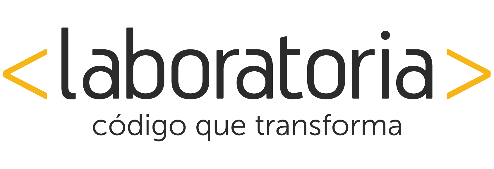

Descripción del cargo
Debido al gran crecimiento de Laboratoria Chile, necesitamos más manos para hacer realidad todas nuestras metas. Buscamos a una persona que quiera asumir el cargo de Profesor/a de Desarrollo web front-end, cargo de suma relevancia para nuestra organización, ya que es quien asegura el desarrollo tecnológico de nuestras alumnas.
Funciones Principales
Disponibilidad
¿Qué características debes tener para unirte a Laboratoria?
Requisitos
Información Adicional
Laboratoria está actualmente en Perú, Chile y México. El 2015 implementamos el piloto en Chile con un equipo muy pequeño, el cual creció con la segunda generación de 42 alumnas, quienes están actualmente finalizando el programa y crecerá aún más para este segundo semestre del 2016. La inserción laboral que hemos tenido ha sido tremendamente exitosa con un 66% de empleabilidad y esperamos continuar y mejorar cada vez más. Para el segundo semestre formaremos a 70 mujeres, para lo cual necesitamos un equipo fortalecido por gente que "se ponga la camiseta" para hacer este sueño realidad!
Datos Prácticos